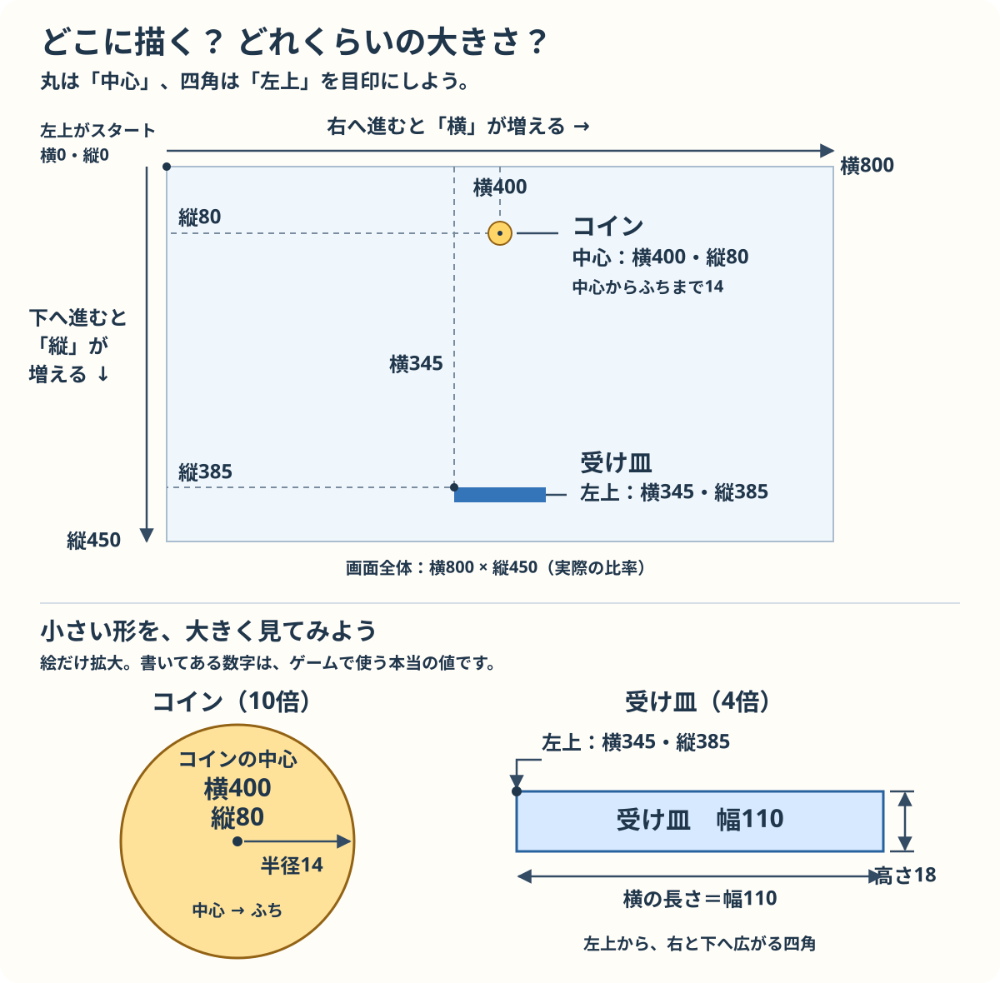
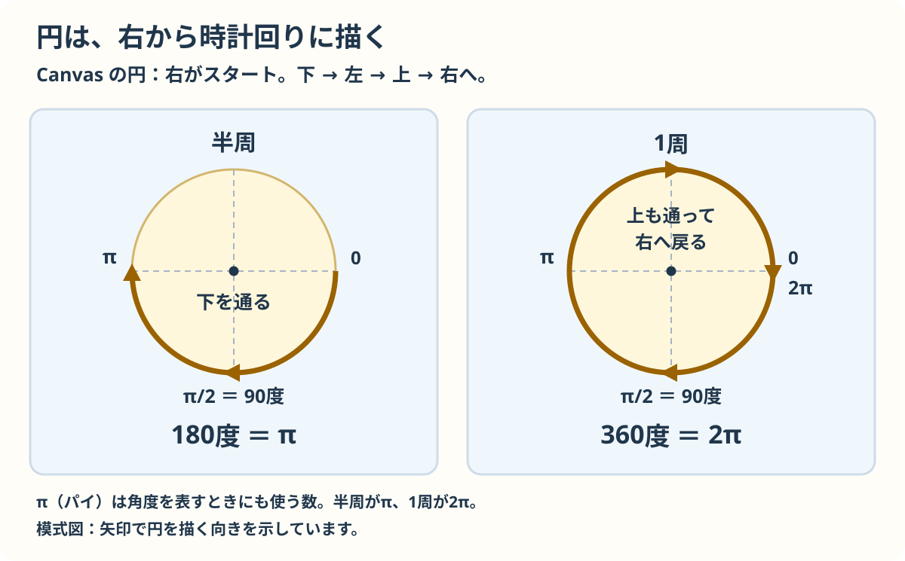
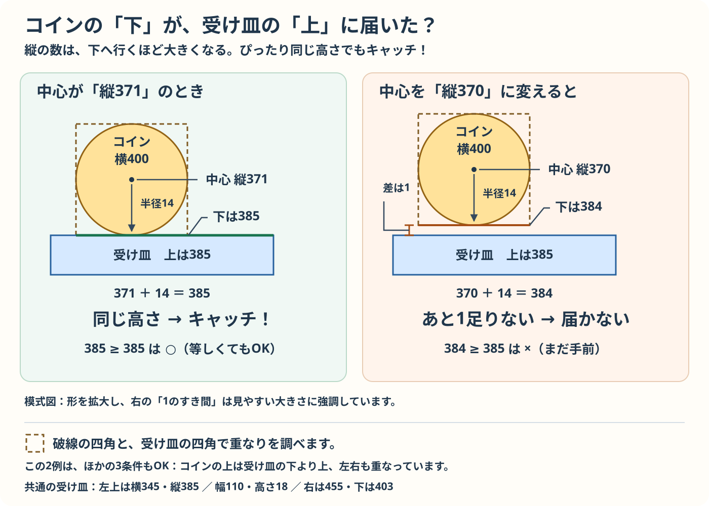

HTML・CSS・JAVASCRIPT を少しずつ
コインキャッチを
自分で書いて作ろう
Canvas（キャンバス）は、ブラウザの中に絵を描くための場所です。用意したひな型のファイルにコードを書き足し、絵を描く、動かす、キーで操作する、当たりを調べる、という順番でゲームを作ります。
この教材で使うのは、ブラウザと3つのファイルだけです。ライブラリ（追加の機能をまとめた道具）、ビルド（実行前にコードを変換する作業）、開発用サーバー（確認用にページを表示する仕組み）は必要ありません。ゲームを動かすためのインストールも不要です。操作にはパソコンのキーボードを使います。
準備から始める ↓準備
自分の作業用フォルダーを作る
ZIPを展開して、できたフォルダー（通常はmy-game）のindex.htmlを開きます。WindowsではZIPを右クリックして「すべて展開」を選びます。
ZIPを使った場合は、下の手順2のコピーは不要です。手順3で展開したフォルダーのindex.htmlを開きます。
保存したZIPを展開し、中の.urlファイルをデスクトップに置くと、このページを開けます。教材フォルダーを動かしたときは、移動先でこのページを開いて作り直してください。Macなどでは教材を開く.htmlを開くか、ブラウザーのブックマークを使えます。
- このリポジトリ（ゲームのファイルをまとめた場所）をダウンロードするか、クローン（Git という管理ツールを使ってコピー）してパソコンに保存します。Web ページを見るブラウザと、コードを書くテキストエディターがあれば進められます。
- 好きな場所に
my-gameなどの作業用フォルダーを作り、保存したフォルダーのtemplate/にあるindex.html・style.css・script.jsの3ファイルをコピーします。 - 作業用の
index.htmlをブラウザで開きます。空の白い Canvas が出れば準備できています。ここからはコピー先のファイルを編集します。
このページは教材です。ゲームは埋め込んでいません。「制作物を別ページで開く」で見本だけを開けます。自分の制作物は my-game/index.html を開いて確かめます。
コードの比較の読み方
比較欄では消す行、追加する行、そのままの行を色とラベルで示します。長い比較では変更のない途中の行を省略することがあります。比較欄は読むためのもので、選択してコピーする欄ではありません。
「置き換える」場合は、赤い行だけを消すのではなく、指定された変更前の範囲すべてをコピー用のコード全体に置き換えます。そのままの行もコピー用のコードに含まれます。古い関数を残して同じ名前の関数を追加しないでください。「追加する」場合は、指定された場所にコピー用のコードを加えます。
コピーするのは「コピー用」と書かれたコード欄です。比較欄のラベルや記号はコードに入りません。全文の見本は手元のコードを見比べるための参考です。
HTML と CSS を整える
まず、コピー先の index.html 全体を次のコードに置き換えます。タイトルと Canvas の説明をゲームの名前にします。表示する要素は Canvas だけです。
比較（読むための表示）
置き換えるコード（コピー用）
<!doctype html>
<html lang="ja">
<head>
<meta charset="UTF-8" />
<meta name="viewport" content="width=device-width, initial-scale=1.0" />
<title>コインキャッチ</title>
<link rel="stylesheet" href="style.css" />
<script src="script.js" defer></script>
</head>
<body>
<main>
<canvas id="game-canvas" width="800" height="450" aria-label="コインキャッチのゲーム画面">
このブラウザは Canvas に対応していません。
</canvas>
</main>
</body>
</html>
<canvas> は絵を描く場所を作ります。id="game-canvas" は JavaScript がその場所を見つけるための名前です。
width="800" と height="450" は、絵を描くときに使う横幅と高さをピクセル（画面上の小さな点）で決めています。絵を描く場所は、横と縦の位置を数字で表した「座標」で指定します。
<link> は同じフォルダーの CSS を、<script> は JavaScript を読み込みます。defer を付けると、HTML を読み終えてから JavaScript が動くので、Canvas を見つけられます。
charset="UTF-8" は日本語の文字を正しく扱う指定です。
次に、コピー先の style.css 全体を次のコードに置き換えます。元のひな型から Canvas の背景色だけを変えています。
比較（読むための表示）
置き換えるコード（コピー用）
body {
min-height: 100vh;
margin: 0;
display: grid;
place-items: center;
background: #202635;
}
canvas {
display: block;
max-width: 100vw;
height: auto;
background: #f7fbff;
}
CSS は 対象 { プロパティ: 値; } の形で、見た目を指定します。body の中にはページ全体の設定、canvas の中には Canvas の設定を書きます。display: grid と place-items: center で Canvas を中央に置き、background で色を決めます。#f7fbff は薄い青を表す色のコードです。
100vh はブラウザに表示される部分の高さ、100vw はその幅です。max-width: 100vw と height: auto で、画面が狭いときも縦横の形を保ったまま Canvas を縮めます。画面上の見た目が縮んでも、JavaScript で使う横800・縦450の座標は変わりません。
保存して再読み込みし、中央の Canvas が薄い青になれば準備完了です。以降、HTML と CSS は変えず、script.js に書き足します。
コードを追加・置換するときの約束
関数は、いくつかの命令をまとめて名前を付けたものです。ひな型には、絵を描く命令をまとめる draw() などの関数があります。
- 各 STEP は直前の STEP を終えたコードから始めます。掲載した追加・置換を、上からすべて実行してから保存します。
- 「関数を置き換える」は
function 名前(...) {から、その関数の終わりの}までです。古い関数を残して同名の関数を追加しないようにします。 - 追加する関数は、ほかの関数の中に入れません。閉じる
}を確認してから、その下へ書きます。 - 小さな練習で変えた値は、次の STEP の前に元に戻します。書く場所が分からなくなったら、各段階の「script.js 全体」を開いて見比べられます。
STEP 01
丸と四角を描く
1. 目標
空の Canvas に、コイン・受け皿・得点の文字を描きます。位置を表すデータと、画面に描く処理を分けます。
2. 編集するファイルと場所
作業用フォルダーの script.js を編集します。ファイルの初めにある canvas と ctx の宣言の下に、ゲーム用の変数（数値などに名前を付けて保存するもの）を追加し、draw() だけを置き換えます。start()・update()・gameLoop() はひな型のままです。
3. 追加または置換するコード
1. 位置と大きさの変数を追加する
const ctx = canvas.getContext("2d"); の行の直後に、空行を1行挟んで追加します。start() の中には入れません。
比較（読むための表示）
追加するコード（コピー用）
const playerWidth = 110;
const playerHeight = 18;
const playerY = 385;
let playerX = (canvas.width - playerWidth) / 2;
const coinRadius = 14;
let coinX = canvas.width / 2;
let coinY = 80;
2. draw() を置き換える
function draw() { の行から、その関数を閉じる行頭の } までを、次のコードで丸ごと置き換えます。前後の関数は含めません。
比較（読むための表示）
置き換えるコード（コピー用）
function draw() {
ctx.clearRect(0, 0, canvas.width, canvas.height);
ctx.fillStyle = "#2563eb";
ctx.fillRect(playerX, playerY, playerWidth, playerHeight);
ctx.fillStyle = "#f5b942";
ctx.beginPath();
ctx.arc(coinX, coinY, coinRadius, 0, Math.PI * 2);
ctx.fill();
ctx.fillStyle = "#172b4d";
ctx.font = "22px sans-serif";
ctx.fillText("コイン: 0", 24, 38);
}
4. コードの意味
変数は、数値などのデータに名前を付けて保存するものです。たとえば let coinY = 80; は、コインの縦の位置として 80 を保存します。
const はあとから別の値を入れ直さない変数、let は入れ直せる変数を作ります。幅や半径は const、これから動かす位置は let にします。
= は右の値を左の変数に入れる「代入」です。
行末の ; は文の区切りです。
canvas.width は Canvas に設定した横幅で、ここでは800ピクセルです。(canvas.width - playerWidth) / 2 は、受け皿を中央に置く計算です。- は引き算、/ は割り算で、丸括弧の中を先に計算します。座標は場所を表す数字の組です。Canvas の左上は (0, 0) で、横の x は右へ、縦の y は下へ進むほど増えます。受け皿は左上の座標で、コインは中心の座標で置きます。

画面全体は実際の比率です。下の絵ではコインを10倍、受け皿を4倍に拡大しています。図の数字はゲームで使う値です。
coinX = 400、coinY = 80、coinRadius = 14。受け皿の playerX = 345、playerY = 385、幅 110、高さ 18 です。
ひな型の document.querySelector("#game-canvas") は HTML の同じ id を持つ Canvas を見つけます。getContext("2d") で取り出した ctx を使い、2D（平面）の画面に絵を描きます。文字は引用符で囲み、数値は引用符なしで書きます。
| 命令・設定 | このコードでの意味 |
|---|---|
clearRect(0, 0, canvas.width, canvas.height) | 左上から画面全体の前の絵を消します。これから毎回描き直すためです。 |
fillStyle = "#2563eb" | このあと塗る色を指定します。色を変えても、すでに描いた絵の色は変わりません。 |
fillRect(x, y, 幅, 高さ) | 左上の座標と大きさを指定して、受け皿の四角を塗ります。 |
beginPath() | 新しい図形の線を作り始めます。ひとつ前に作った線を引き継がないために必要です。 |
arc(x, y, 半径, 0, Math.PI * 2) | 円の線を作ります。角度はラジアンという単位で、Math.PI * 2 が一周です。* は掛け算です。 |
fill() | 作った円の内側を、直前に指定した色で塗ります。 |
font = "22px sans-serif" | このあと描く文字の大きさと書体を指定します。 |
fillText("コイン: 0", 24, 38) | 文字を描きます。24 が左端の x、38 が文字の基準線の y です。 |

右端の 0 から下へ進みます。半周が Math.PI、1周が Math.PI * 2 です。下端は Math.PI / 2。角度はラジアンで表し、円周を半径で割ると1周は 2π になります。
関数は、いくつかの命令をまとめて名前を付けたものです。function draw() { ... } は draw という関数を作ります。ひな型の gameLoop() は update() と draw() を順に実行し、requestAnimationFrame(gameLoop) で次の実行を予約します。このくり返しをゲームループと呼びます。画面を1回描き直す区切りを「1フレーム」と呼びます。今は位置が変わらないので、絵は止まって見えます。
5. 保存・再読み込み後の確認
- script.js を保存し、作業用フォルダーの index.html を開いて再読み込みします。
- 上の中央に金色の丸、下の中央に青い受け皿、左上に「コイン: 0」が出ます。
- しばらく待っても位置が変わらないことを確かめます。
6. 小さな練習
coinRadius を 24 にして丸を大きくしましょう。draw() の #2563eb を #16a34a にして、受け皿を緑にしてみましょう。
次の STEP に進む前に、練習で変えた部分を上のコードの値に戻しましょう。
目次へ戻る ↑STEP 02
位置を更新して落下させる
1. 目標
毎フレーム、コインの縦位置を変えます。画面の下まで落ちたら、横位置を変えて上へ戻します。
2. 編集するファイルと場所
STEP 01 を終えた script.js に続けて書きます。速度の変数を追加し、start() と update() を置き換え、新しい resetCoin() を追加します。draw() は変えません。
3. 追加または置換するコード
1. 落下速度を追加する
const coinRadius = 14; の行の直後に追加します。
比較（読むための表示）
追加するコード（コピー用）
const coinSpeed = 3;
2. start() を置き換える
function start() { の行から、その関数を閉じる行頭の } までを、次のコードで丸ごと置き換えます。前後の関数は含めません。
比較（読むための表示）
置き換えるコード（コピー用）
function start() {
coinX = canvas.width / 2;
coinY = 80;
}
3. update() を置き換える
function update() { の行から、その関数を閉じる行頭の } までを、次のコードで丸ごと置き換えます。前後の関数は含めません。
比較（読むための表示）
置き換えるコード（コピー用）
function update() {
coinY += coinSpeed;
if (coinY - coinRadius > canvas.height) {
resetCoin();
}
}
4. resetCoin() を追加する
function draw() { の行のすぐ上に、次の関数を追加します。前後の関数の外側に書き、draw() との間は空行を1行挟みます。
比較（読むための表示）
追加するコード（コピー用）
function resetCoin() {
coinX = coinRadius + Math.random() * (canvas.width - coinRadius * 2);
coinY = -coinRadius;
}
4. コードの意味
start() は最初の1回、コインを中央上部に置きます。coinY += coinSpeed は coinY = coinY + coinSpeed の短い書き方です。1フレームごとに y を3ピクセル増やすので、下へ動きます。この教材の速度の単位はピクセル／フレームです。
if (条件) { 処理 } は条件を満たすときだけ処理します。> は「より大きい」の比較です。coinY - coinRadius はコインの上端なので、それが canvas.height（450）を超えれば丸全体が下へ出ています。そこで resetCoin() を呼びます。関数名の後ろに () を付けると、その関数を実行します。
Math.random() は0以上1未満の数を返します。その数に canvas.width - coinRadius * 2（画面の幅から半径2個分を引いた長さ）を掛け、最後に coinRadius（半径）を足します。こうするとコインの左右が画面からはみ出さない横位置を選べます。coinY = -coinRadius は中心を画面上端より少し上に置く指定です。描画のコードを変えなくても、update() が変えた座標を draw() が使うことで動いて見えます。
5. 保存・再読み込み後の確認
- 保存して再読み込みします。上からコインが落ちてきます。
- コインが画面の下まで落ちると、次は別の横位置から現れます。
- 受け皿は動かず、コインは受け皿を通り抜けます。
6. 小さな練習
coinSpeed を 1 と 5 に変え、速さを比べましょう。次に resetCoin() の coinX = ...; を coinX = canvas.width / 2; にすると、毎回中央から落ちます。
次の STEP に進む前に、練習で変えた部分を上のコードの値に戻しましょう。
目次へ戻る ↑STEP 03
キーボードで受け皿を動かす
1. 目標
左右キーを押している間だけ受け皿を動かし、画面の端で止めます。押されたキーを記録し、その記録を使って位置を変えます。
2. 編集するファイルと場所
STEP 02 の script.js に続けます。変数を追加し、start() と update() を置き換えます。キーが押されたときなどの出来事を「イベント」と呼びます。キー用の3つの関数とイベントの登録を追加し、draw() に操作表示を1行加えます。
3. 追加または置換するコード
1. 移動速度を追加する
const playerY = 385; の行の直後に追加します。
比較（読むための表示）
追加するコード（コピー用）
const playerSpeed = 6;
2. キーの状態を覚える変数を追加する
先頭の変数宣言にある let coinY = 80; の行の直後に、空行を1行挟んで追加します。
比較（読むための表示）
追加するコード（コピー用）
let leftPressed = false;
let rightPressed = false;
3. start() を置き換える
function start() { の行から、その関数を閉じる行頭の } までを、次のコードで丸ごと置き換えます。前後の関数は含めません。
比較（読むための表示）
置き換えるコード（コピー用）
function start() {
playerX = (canvas.width - playerWidth) / 2;
coinX = canvas.width / 2;
coinY = 80;
clearKeys();
}
4. update() を置き換える
function update() { の行から、その関数を閉じる行頭の } までを、次のコードで丸ごと置き換えます。前後の関数は含めません。
比較（読むための表示）
置き換えるコード（コピー用）
function update() {
if (leftPressed) {
playerX -= playerSpeed;
}
if (rightPressed) {
playerX += playerSpeed;
}
playerX = Math.max(0, Math.min(playerX, canvas.width - playerWidth));
coinY += coinSpeed;
if (coinY - coinRadius > canvas.height) {
resetCoin();
}
}
5. キー用の関数を3つ追加する
function draw() { の行のすぐ上に追加します。resetCoin() の閉じる } より後です。draw() との間は空行を1行挟みます。
比較（読むための表示）
追加するコード（コピー用）
function handleKeyDown(event) {
if (event.code === "ArrowLeft") {
leftPressed = true;
event.preventDefault();
}
if (event.code === "ArrowRight") {
rightPressed = true;
event.preventDefault();
}
}
function handleKeyUp(event) {
if (event.code === "ArrowLeft") {
leftPressed = false;
}
if (event.code === "ArrowRight") {
rightPressed = false;
}
}
function clearKeys() {
leftPressed = false;
rightPressed = false;
}
6. イベントを登録する
function gameLoop() { の行のすぐ上、draw() の外側に追加します。gameLoop() との間は空行を1行挟みます。
比較（読むための表示）
追加するコード（コピー用）
document.addEventListener("keydown", handleKeyDown);
document.addEventListener("keyup", handleKeyUp);
window.addEventListener("blur", clearKeys);
7. ゲーム内に操作表示を追加する
draw() 内の ctx.fillText("コイン: 0", 24, 38); の直後に追加します。
比較（読むための表示）
追加するコード（コピー用）
ctx.fillText("← → キーで移動", 24, 430);
4. コードの意味
true と false は「はい／いいえ」を表す真偽値です。イベントは、キーが押されるなど、ブラウザで起きた出来事です。キーを押す keydown イベントで対応する変数を true にし、キーを離す keyup イベントで false に戻します。キーが押されている間、update() の if (leftPressed) などが位置を更新します。-= は引いて代入する書き方です。
addEventListener("keydown", handleKeyDown) は、キーが押されたら呼んでほしい関数を登録します。ここでは handleKeyDown() と書かず、関数名だけを渡します。キーが押されてブラウザが handleKeyDown を実行するとき、押されたキーなどの情報が event に渡されます。event.code が "ArrowLeft" または "ArrowRight" かを ===（同じかを比べる演算子）で調べます。= の代入とは役割が違います。
event.preventDefault() は、矢印キーでページをスクロールするブラウザの動作を防ぎます。blur は、ゲームの画面から別の画面に切り替えるなどして、ウィンドウが操作を受け取らなくなったときのイベントです。別のタブへ移動して keyup を受け取れなくても、clearKeys() が入力を解除するので、受け皿が動き続けるのを防げます。
Math.min(playerX, canvas.width - playerWidth) は2つの値の小さい方を選び、受け皿が右端から出ないようにします。さらに Math.max(0, ...) は0とその結果の大きい方を選び、左端より左へ出ないようにします。受け皿の左端が動ける右側の限界は、画面の幅800から受け皿の幅110を引いた 800 - 110 = 690 です。
5. 保存・再読み込み後の確認
- 保存して再読み込みし、ゲームのタブをクリックして、ゲームがキー操作を受け取れるようにします。
- ← と → を押し続けると移動し、離すと止まります。両端でも受け皿全体が画面に収まります。
- 移動中に別のタブへ切り替えて戻り、キーを離したあとに動き続けないことを確認します。コインに触れても得点はまだ増えません。
6. 小さな練習
playerSpeed を 3、次に 9 に変えて操作感を比べましょう。両方の矢印キーを同時に押すと、左右の移動量が打ち消し合うことも確かめましょう。
次の STEP に進む前に、練習で変えた部分を上のコードの値に戻しましょう。
目次へ戻る ↑STEP 04
重なりを調べて得点をつける
1. 目標
コインが受け皿に触れたら1点を加え、次のコインを落とします。まだ残り回数はなく、何度でもキャッチを練習できます。
2. 編集するファイルと場所
STEP 03 の script.js に続けます。得点の変数を追加し、start()・update()・draw() を置き換えます。coinTouchesPlayer() も追加します。
3. 追加または置換するコード
1. 得点の変数を追加する
先頭の変数宣言にある let rightPressed = false; の行の直後に追加します。
比較（読むための表示）
追加するコード（コピー用）
let score = 0;
2. start() を置き換える
function start() { の行から、その関数を閉じる行頭の } までを、次のコードで丸ごと置き換えます。前後の関数は含めません。
比較（読むための表示）
置き換えるコード（コピー用）
function start() {
playerX = (canvas.width - playerWidth) / 2;
coinX = canvas.width / 2;
coinY = 80;
clearKeys();
score = 0;
}
3. update() を置き換える
function update() { の行から、その関数を閉じる行頭の } までを、次のコードで丸ごと置き換えます。前後の関数は含めません。
比較（読むための表示）
置き換えるコード（コピー用）
function update() {
if (leftPressed) {
playerX -= playerSpeed;
}
if (rightPressed) {
playerX += playerSpeed;
}
playerX = Math.max(0, Math.min(playerX, canvas.width - playerWidth));
coinY += coinSpeed;
if (coinTouchesPlayer()) {
score += 1;
resetCoin();
} else if (coinY - coinRadius > canvas.height) {
resetCoin();
}
}
4. 当たり判定の関数を追加する
function resetCoin() { の行のすぐ上に追加します。update() の閉じる } より後です。resetCoin() との間は空行を1行挟みます。
比較（読むための表示）
追加するコード（コピー用）
function coinTouchesPlayer() {
return (
coinY + coinRadius >= playerY &&
coinY - coinRadius <= playerY + playerHeight &&
coinX + coinRadius >= playerX &&
coinX - coinRadius <= playerX + playerWidth
);
}
5. draw() を置き換える
function draw() { の行から、その関数を閉じる行頭の } までを丸ごと置き換えます。得点を固定の0から変数に変更します。
比較（読むための表示）
置き換えるコード（コピー用）
function draw() {
ctx.clearRect(0, 0, canvas.width, canvas.height);
ctx.fillStyle = "#2563eb";
ctx.fillRect(playerX, playerY, playerWidth, playerHeight);
ctx.fillStyle = "#f5b942";
ctx.beginPath();
ctx.arc(coinX, coinY, coinRadius, 0, Math.PI * 2);
ctx.fill();
ctx.fillStyle = "#172b4d";
ctx.font = "22px sans-serif";
ctx.fillText("コイン: " + score, 24, 38);
ctx.fillText("← → キーで移動", 24, 430);
}
4. コードの意味
score は集めた枚数です。start() で0に戻し、キャッチしたときに score += 1 で1点増やします。"コイン: " + score の + は、片方が文字列なので文字をつなげます。得点の数値も文字に変わって表示されます。
当たり判定は、コインと受け皿が触れたかを調べる処理です。ここでは丸いコインを囲む四角と、受け皿の四角が重なったかを調べます。コインを囲む四角の角が受け皿と重なると、丸いコインそのものが触れていなくてもキャッチになります。return は計算結果を呼び出した場所に返します。4つの条件を && でつなぐと、全部が成り立つときだけ true になります。>= は「以上」、<= は「以下」なので、端が接したときもキャッチです。

説明用の例です。コインの中心は x = 400、半径 14、受け皿の上は y = 385。左の絵は中心の y が 371、右は 370 です。見やすいよう形を拡大し、右のすき間も強調した模式図です。
下端は coinY + coinRadius。左の例では 371 + 14 = 385。ほかの3条件も成り立つとき、coinY + coinRadius >= playerY、coinY - coinRadius <= playerY + playerHeight、coinX + coinRadius >= playerX、coinX - coinRadius <= playerX + playerWidth をすべて満たせばキャッチです。円を囲む四角で調べるため、四角の角だけでも当たりになります。
| 条件 | 調べること |
|---|---|
coinY + coinRadius >= playerY | コインの下端が受け皿の上端に届いている。 |
coinY - coinRadius <= playerY + playerHeight | コインの上端が受け皿の下端を通り過ぎていない。 |
coinX + coinRadius >= playerX | コインの右端が受け皿の左端に届いている。 |
coinX - coinRadius <= playerX + playerWidth | コインの左端が受け皿の右端を通り過ぎていない。 |
if (coinTouchesPlayer()) でキャッチを調べ、そうでなかった場合だけ else if で画面外を調べます。同じフレームで、キャッチした場合と画面の外に落ちた場合の両方の処理は行いません。キャッチ後すぐに resetCoin() を呼ぶので、同じ1枚が何フレームも重なって何点も加算されるのを防げます。
5. 保存・再読み込み後の確認
- 保存して再読み込みします。最初のコインは中央に落ちるので、動かずに待つと1点増えます。
- 次のコインを左右キーで追いかけます。1回のキャッチで1点だけ増え、コインは上に戻ります。
- わざと落としても得点が減らず、次のコインが現れます。受け皿の端でもキャッチできるか試します。
6. 小さな練習
playerWidth を 60 に変え、キャッチしにくくなるか確かめましょう。次に score += 1 を score += 2 にして、1枚の得点を変えてみましょう。
次の STEP に進む前に、練習で変えた部分を上のコードの値に戻しましょう。
目次へ戻る ↑STEP 05
クリアと再挑戦を作る
1. 目標
3回落とす前に5枚集めるとクリアにします。終了したら動きを止め、Space キーで最初から遊べるようにします。
2. 編集するファイルと場所
STEP 04 の script.js に続けます。ゲームの状態とルールの変数を追加し、start()・update()・handleKeyDown()・draw() を置き換えます。イベントの登録やゲームループは追加しません。
3. 追加または置換するコード
1. ルールと状態の変数を追加する
先頭の変数宣言にある let score = 0; の行の直後に、空行を1行挟んで追加します。
比較（読むための表示）
追加するコード（コピー用）
const targetScore = 5;
const startingLives = 3;
let lives = startingLives;
let gameState = "playing";
2. start() を置き換える
function start() { の行から、その関数を閉じる行頭の } までを、次のコードで丸ごと置き換えます。前後の関数は含めません。
比較（読むための表示）
置き換えるコード（コピー用）
function start() {
playerX = (canvas.width - playerWidth) / 2;
coinX = canvas.width / 2;
coinY = 80;
clearKeys();
score = 0;
lives = startingLives;
gameState = "playing";
}
3. update() を置き換える
function update() { の行から、その関数を閉じる行頭の } までを、次のコードで丸ごと置き換えます。前後の関数は含めません。
比較（読むための表示）
置き換えるコード（コピー用）
function update() {
if (gameState !== "playing") {
return;
}
if (leftPressed) {
playerX -= playerSpeed;
}
if (rightPressed) {
playerX += playerSpeed;
}
playerX = Math.max(0, Math.min(playerX, canvas.width - playerWidth));
coinY += coinSpeed;
if (coinTouchesPlayer()) {
score += 1;
if (score >= targetScore) {
gameState = "clear";
} else {
resetCoin();
}
} else if (coinY - coinRadius > canvas.height) {
lives -= 1;
if (lives === 0) {
gameState = "gameover";
} else {
resetCoin();
}
}
}
4. handleKeyDown() を置き換える
function handleKeyDown(event) { の行から、その関数を閉じる行頭の } までを、次のコードで丸ごと置き換えます。前後の関数は含めません。
比較（読むための表示）
置き換えるコード（コピー用）
function handleKeyDown(event) {
if (event.code === "ArrowLeft") {
leftPressed = true;
event.preventDefault();
}
if (event.code === "ArrowRight") {
rightPressed = true;
event.preventDefault();
}
if (event.code === "Space") {
event.preventDefault();
if (gameState !== "playing") {
start();
}
}
}
5. draw() を置き換える
function draw() { の行から、その関数を閉じる行頭の } までを丸ごと置き換えます。ゲームの操作表示と結果画面も Canvas の中に描きます。
比較（読むための表示）
置き換えるコード（コピー用）
function draw() {
ctx.clearRect(0, 0, canvas.width, canvas.height);
ctx.fillStyle = "#2563eb";
ctx.fillRect(playerX, playerY, playerWidth, playerHeight);
ctx.fillStyle = "#f5b942";
ctx.beginPath();
ctx.arc(coinX, coinY, coinRadius, 0, Math.PI * 2);
ctx.fill();
ctx.fillStyle = "#172b4d";
ctx.font = "22px sans-serif";
ctx.fillText("コイン: " + score + " / " + targetScore, 24, 38);
ctx.fillText("のこり: " + lives, 650, 38);
ctx.font = "18px sans-serif";
ctx.fillText("← →：移動 / " + targetScore + "枚でクリア / " + startingLives + "回ミスで終了", 24, 430);
if (gameState !== "playing") {
ctx.fillStyle = "rgba(247, 251, 255, 0.92)";
ctx.fillRect(0, 0, canvas.width, canvas.height);
let message = "ゲームオーバー";
if (gameState === "clear") {
message = "クリア！";
}
ctx.fillStyle = "#172b4d";
ctx.textAlign = "center";
ctx.font = "bold 40px sans-serif";
ctx.fillText(message, canvas.width / 2, 195);
ctx.font = "24px sans-serif";
ctx.fillText("集めたコイン: " + score + " 枚", canvas.width / 2, 245);
ctx.fillText("Space キーでもう一度", canvas.width / 2, 295);
ctx.textAlign = "left";
}
}
4. コードの意味
targetScore はクリアに必要な枚数、startingLives は最初の残り回数です。残り回数 lives はコインを落とすたびに1減り、0になるとゲームオーバーです。gameState には "playing"（プレイ中）、"clear"（クリア）、"gameover"（ゲームオーバー）のどれかを入れます。状態の名前はコードと同じつづりで書きます。
score >= targetScore ならクリア、lives === 0 ならゲームオーバーです。!== は「同じではない」の比較で、if (gameState !== "playing") { return; } はプレイ中以外なら update() をそこで終えます。得点や位置は止まりますが、ゲームループの draw() は呼ばれ続けます。
draw() は通常の絵の上に、半透明の四角と結果を描き重ねます。rgba(..., 0.92) の最後の数は色の透けにくさです。1なら下の絵が透けず、0なら色が見えません。textAlign = "center" で文字を指定座標の中央に寄せ、描き終わったら "left" に戻します。次のフレームの得点表示も同じ描画設定を使うためです。
終了後の Space では start() だけを呼びます。位置、入力、得点、残り回数、状態を初期値に戻せば、すでに続いているゲームループが次のフレームを描きます。ここで gameLoop() をもう一度呼ぶと、更新と描画のくり返しが二重になり、動きが速くなります。初回の末尾にある start(); gameLoop(); と、STEP 03 のイベント登録は各1回のままにします。
5. 保存・再読み込み後の確認
- 保存して再読み込みします。画面に得点、残り回数、操作とルールが表示されます。
- 5枚集めて「クリア！」を確認します。終了後に左右キーを押しても受け皿は動きません。Space キーで得点0・残り3・中央の位置に戻ります。
- 今度は3回落とし「ゲームオーバー」を確認します。こちらも Space キーで再挑戦でき、何度繰り返しても動きが速くならないことを確認します。
6. 小さな練習
targetScore を 8、startingLives を 5 に変えましょう。画面下のルール表示も変数から描いているので一緒に変わります。さらに受け皿の幅と落下速度を調整し、遊びやすい組み合わせを探しましょう。
うまく動かないとき
- エディターで保存してから、ゲームを開いているタブを再読み込みします。教材のタブだけを再読み込みしてもゲームは変わりません。
- 編集している
script.jsと、開いているindex.htmlが同じ作業用フォルダーにあるか確認します。 - 丸括弧
()、波括弧{}、引用符""の閉じ忘れを確認します。コード内の記号と英数字は半角で書きます。 - ブラウザの開発者ツール（動作を調べるための画面）を開き、Console という欄を見ます。赤いエラーがあれば、表示されたファイル名と行番号を確かめます。変数名は大文字・小文字も区別します。
- 各段階の
script.js 全体と見比べます。特に STEP 03 のイベント登録と、ファイル末尾のstart();・gameLoop();を確認します。
完成したら、色、受け皿の幅、落ちる速さ、必要な枚数を変えて、自分のゲームにしてみましょう。